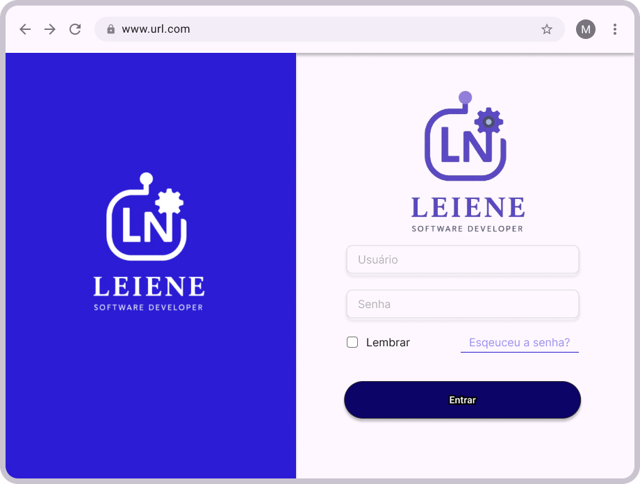
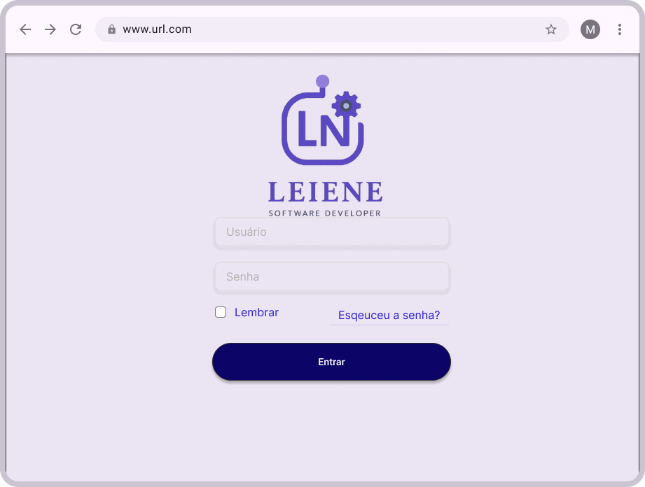
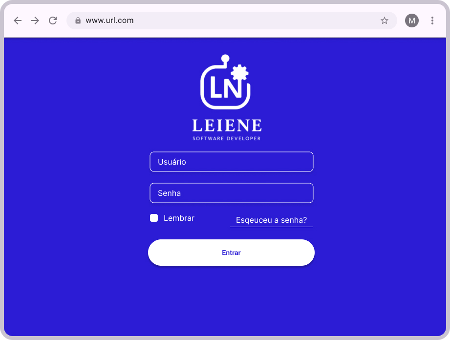
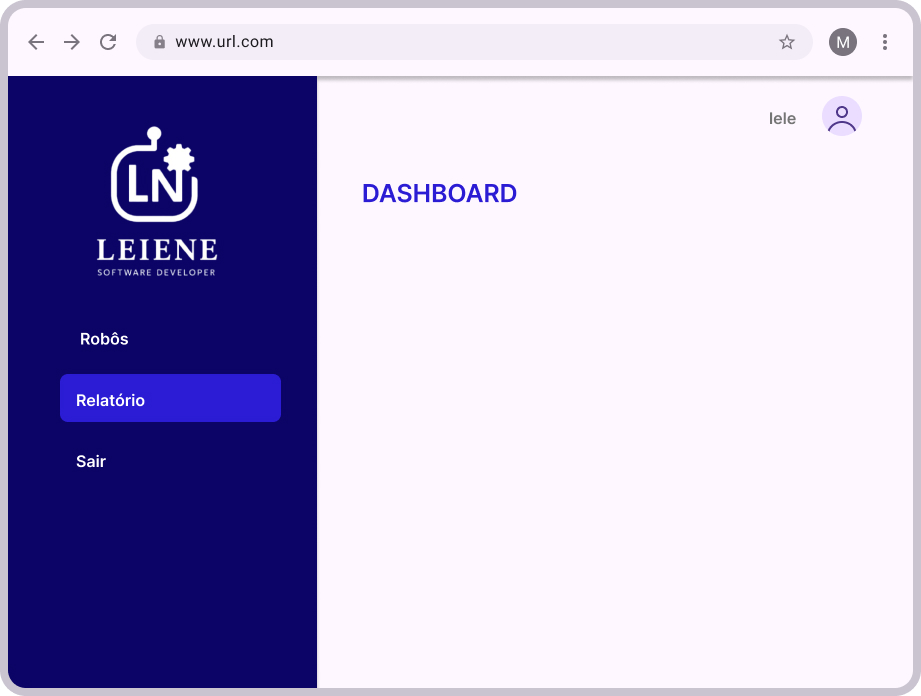
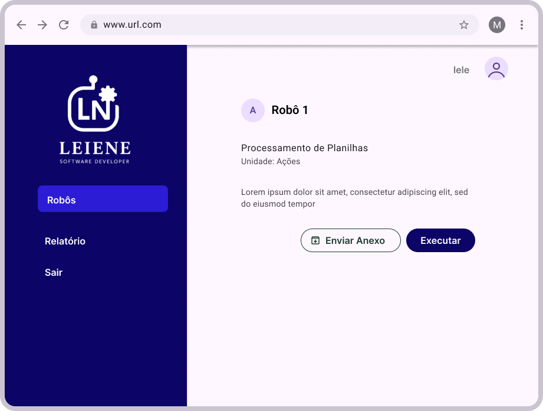
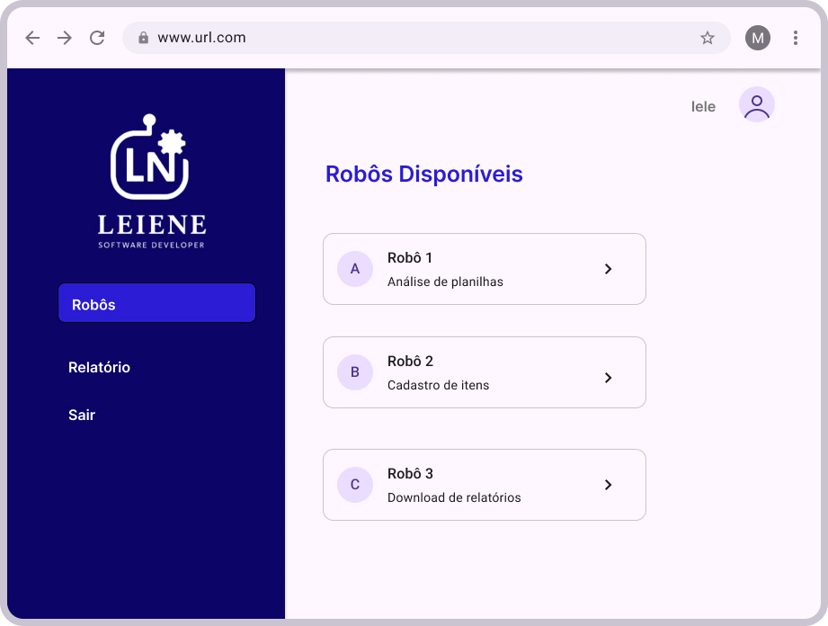

Orquestrador de Robôs
Visão Geral
Sistema centralizador para controle de robôs RPA. Permite visualizar, iniciar, pausar e monitorar fluxos automatizados de diferentes áreas do negócio, com registro de logs e alertas.
Gerenciamento
de Robôs
Agendamentos
e Execuções
Fluxos
Automatizados
Telas do Protótipo






Centralizador de Arquivos
Baixe o executável para utilizar o Centralizador de Arquivos.
Baixar e Executar CentralizadorDesafios Técnicos
- Integração de múltiplos robôs: Padronização das comunicações entre bots de diferentes tecnologias.
- Gerenciamento de agendamento e falhas: Tratamento de logs e alertas automáticos para supervisão mínima.